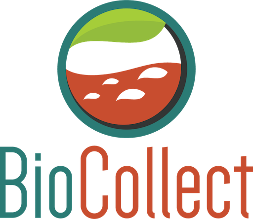

A user guide for the Green Army programme app is available at http://www.environment.gov.au/land/green-army. It is recommended that you familiarise yourself with the user guide before using this app.
Important: While the app is in use, it is strongly recommended that no changes are made to the project in the online reporting tool, MERIT (i.e. data added or activities changed in MERIT). During the sync process, data in MERIT will be overridden with data captured by the app.
DO NOT logout of the app if you have not synced your data with MERIT, otherwise data you have captured in the app will be lost.
How do I create a site?
Step 1: Tap the ‘create new site’ button ()
Step 2: The GPS on your tablet will automatically find your location. Allow a few moments for your GPS to find and refine the location of your site.
Step 3: Enter the site name and a description, then tap ‘create site’. Your site will be added to the list of sites for your project.
How do I sort activities?
Activities can be sorted by type, status, planned start date, sync status and location. Tap the ‘sort’ drop down menu ( ) to sort your activities as needed.
How do I sync changes with MERIT?
Once you have finished entering data into the app, you will need to synchronise (upload) your activity data and site details with MERIT. You will only be able to sync data if you have Internet connection on your device.
Step 1: Tap the sync button on the top right hand side of the screen ( ). Once you have synced your data, the activity icons on the left of the screen will change from red to green where data has been entered into the activity.
DO NOT logout of the app if you have not synced your data with MERIT, otherwise data you have captured in the app will be lost.
How do I cancel or defer activities?
You cannot defer or cancel activities using the app. This needs to be done from within MERIT by your Service Provider, in consultation with the Department of the Environment.
How do I delete a site?
You cannot delete a site using the app. This needs to be done from within MERIT.
How do I add photos of a site or activity?
Photos can only be added to a project via MERIT at this stage. While you are conducting your activities, you may wish to take photos and add them to MERIT later.
I forgot my password?
If you have forgotten your password you will need to reset it via the MERIT website. You cannot request a password reset through the Green Army Programme app.
Who do I contact for assistance?
For technical support using the app, contact the MERIT team at mailto:merit@environment.gov.au or 1800 552 008. If you need to speak to someone about your project, contact your Service Provider.